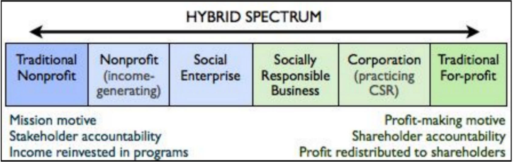

Event Location: Cooper Union for the Advancement of Science and Art Event Date: (10/8-10/10)
Our student led group of organizers at Cooper Union is planning an Ideation Lab where students from across disciplines will work together over 3 days to design a sanitation business concept to increase access to sanitation in Myanmar. Nonprofit leaders, business leaders, academics and local practitioners are on hand in person and virtually to support the teams. After the event, participants and experts make commitments to seeing the enterprise developed, funded and launched and the Archimedes Project reviews the plan for potential support.
An Ideation Lab is a three‑day hackathon‑style event that brings people together from across sectors and disciplines to design a clean water or sanitation business plan for an identified country. At the core of the Ideation Lab model is the principle that our world’s largest challenge can be solved by bringing diverse minds and experiences together. To that end, participants are assembled in academically diverse teams and advised by mentors, judges, and experts representing business, nonprofit, and government experience.
An Ideation Lab is a collaborative problem‑solving process and an exercise in design thinking that requires deep background research and support from existing organizations to understand what barriers to sustainability and scalability have been in the past. With this background, participants work in teams to design a lean business that uses existing technology, to increase sustainable access to a clean drinking water or sanitation profit or service and can scale across a chosen country.
During the three days of learning and design, non‑profit leaders, business leaders, academics and local practitioners are on hand in‑person and virtually to support the teams. These experts advise the participants on the region, clean water, sanitation, lean startup, design thinking, human centered design, current and previous efforts to solve water and sanitation challenges and best practices in international development. Each team presents their business plan before a single business idea is chosen by the participants as the winning enterprise.
A social enterprise is a business for which a social mission and profit are inextricably linked. It makes intentional positive social or environmental impacts by providing a product or service in the open market and by using a sustainable business model.
